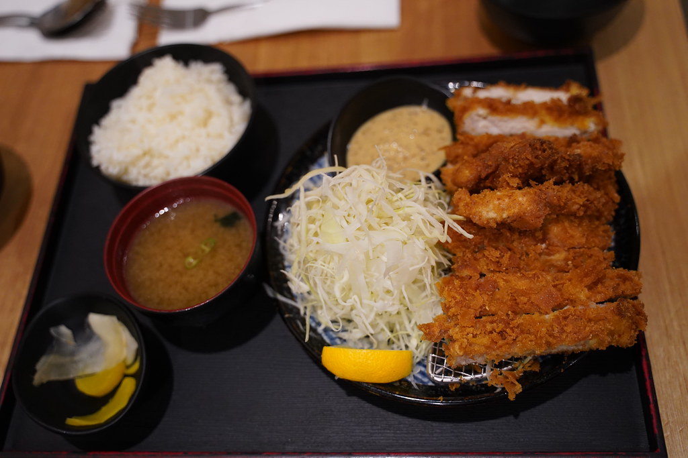

Home
Chicken Katsu

What is chicken katsu?
Chicken katsu is a Japanese dish consisting of a breaded and deep-fried chicken cutlet. The chicken is coated in flour, egg, and panko breadcrumbs before being fried to a crispy, golden brown. It is often served with a tangy tonkatsu sauce and shredded cabbage.
Ingredients
- 1 piece boneless, skinless chicken breast
- ½ tsp Diamond Crystal kosher salt
- ⅛ tsp freshly ground black pepper
- 3 cups neutral oil (for deep-frying)
- 3 Tbsp all-purpose flour
- 1 cup panko
- 1 large egg
- ½ Tbsp neutral oil (for the egg)
- tonkatsu sauce
- shredded green cabbage
Steps
- Slice boneless, skinless chicken breasts horizontally to create thin cutlets. Season both sides with salt and pepper.
- Arrange three shallow dishes: one with all-purpose flour, one with beaten eggs, and one with panko breadcrumbs.
- Dredge each chicken cutlet in flour, ensuring a light, even coating. Dip into the beaten eggs, allowing excess to drip off. Finally, coat thoroughly with panko, pressing gently to adhere.
- In a deep skillet or frying pan, heat neutral oil to 340ºF (170ºC).
- Carefully place the breaded cutlets into the hot oil. Fry for a total of 3 minutes, flipping it over at the halfway point.
- Transfer the cooked cutlets to a wire rack or paper towel-lined plate to drain excess oil. Slice into strips and serve with tonktasu sauce and shredded cabbage.